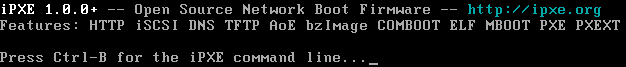

Скрипты

iPXE это бесплатное, open-source ПО, лицензированое GNU GPL.
Самый простой путь начать эксперименты с iPXE, - это скачать загрузочный ISO образ и загрузиться с него. Вы должны увидеть приветственный экран ниже:

Вы можете загрузить что-нибудь через сеть. В отличие от традиционного PXE ROM, iPXE может загружаться через интернет. Если устройство, на котором Вы используете iPXE, подключено к интернет, Вы можете загрузить демонстрационный образ iPXE.
!#ipxedhcp || goto retry_dhcpset base-url ${boot-url}/ubuntu-20.04-server-amd64/installkernel ${base-url}/netboot/ubuntu-installer/amd64/linuxinitrd ${base-url}/netboot/ubuntu-installer/amd64/initrd.gzboot || goto failed
Посмотрите больше примеров на robinsmidsrod gist.